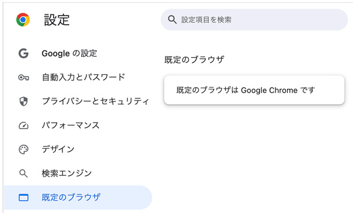
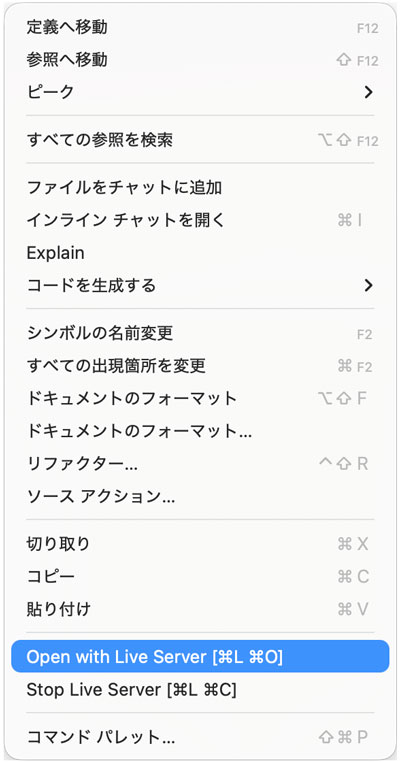
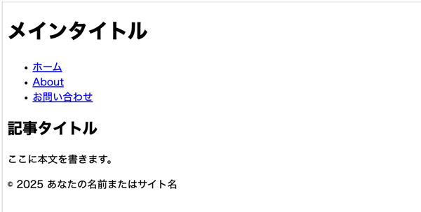

HTML - ブラウザでプレビュー
- プロンプト例
HTMLをブラウザでプレビューするポイントを解説して
✅ HTMLをブラウザでプレビューするポイント
① ファイルの保存形式に注意する
HTMLは .html または .htm で保存します。
正しい例
index.html about.html
よくあるミス
index.html.txt ← 実はテキストファイル
👉 拡張子が.htmlになっているか必ず確認
② 文字コードはUTF-8で保存
日本語を使う場合は UTF-8 で保存しないと文字化けします。
推奨設定
- UTF-8（BOMなし）
またHTML側にも以下を記述します：
<meta charset="UTF-8">
③ 基本のHTML構造を守る
最低限、以下の形になっているか確認しましょう。
<!DOCTYPE html> <html lang="ja"> <head> <meta charset="UTF-8"> <title>テスト</title> </head> <body> <h1>Hello HTML</h1> </body> </html>
④ ブラウザで開く方法
方法①：ダブルクリック
- .html ファイルをダブルクリック → 既定のブラウザで表示
方法②：ドラッグ＆ドロップ
- ブラウザに .html ファイルをドラッグ
方法③：右クリック → プログラムから開く
- Chrome / Edge / Firefox などを指定
⑤ 更新時は「再読み込み」を忘れない
HTMLを修正 → Ctrl + R / F5（Mac：Cmd + R）
【キャッシュが効いている場合】
Ctrl + Shift + R
で強制リロード
⑥ 相対パスの指定ミスに注意
よくあるNG
<img src="/img/test.png">
正しい例
<img src="img/test.png">
👉 HTMLファイルからの相対位置で指定
⑦ 開発者ツールでエラー確認（超重要）
- 表示がおかしいときは F12キー で開発者ツールを表示。
見るポイント
- Console（エラー表示）
- Network（ファイル読み込み状況）
⑧ ライブプレビュー（超おすすめ）
- VS Codeを使っている場合
拡張機能：Live Server
- 自動更新
- 保存 → 即反映
- 簡易ローカルサーバ環境で確認可能

🎯 よくあるトラブル & 対処
| 症状 | 原因 | 対処 |
|---|---|---|
| 文字化け | 文字コード不一致 | UTF-8指定 |
| CSSが反映されない | パス間違い | 相対パス見直し |
| 画像が表示されない | パス or ファイル名ミス | 大文字小文字確認 |
| 変更が反映されない | キャッシュ | 強制リロード |
規定のブラウザ
「HTML 規定ブラウザ」は、通常 HTMLファイルを開くときに自動的に使われる“既定（デフォルト）のブラウザ” のことを指します。
基本の考え方
- HTML には「このブラウザで開く」という規定はありません。
- OS側で設定された既定のブラウザ が使われます。
OSごとの既定ブラウザ（初期状態）
- Windows：Microsoft Edge
- macOS：Safari
- Linux：ディストリビューションにより異なる（Firefox が多い）
- Android：Chrome
- iPhone (iOS)：Safari
開発者向け補足
HTMLファイルを 特定のブラウザで開きたい場合は、Live Server / Open in Browser 機能を使うのが一般的です。
Google Chrome
- PCに入っていない場合は、ダウンロードしてインストールします
Chromeを規定ブラウザに指定
- 「設定」→「規定ブラウザ」

記述例
<!DOCTYPE html> <html lang="ja"> <head> <meta charset="UTF-8"> <title>ページタイトル</title> </head> <body> <!-- header --> <header> <h1>メインタイトル</h1> <nav> <ul> <li><a href="#">ホーム</a></li> <li><a href="#">About</a></li> <li><a href="#">お問い合わせ</a></li> </ul> </nav> </header> <!-- /header --> <!-- main --> <main> <section> <h2>記事タイトル</h2> <p>ここに本文を書きます。</p> </section> </main> <!-- /main --> <!-- footer --> <footer> <p>© 2025 あなたの名前またはサイト名</p> </footer> <!-- /footer --> </body> </html>
Live Server（拡張機能）でプレビュー
- 基本的な文書構造を、Google Chromeでプレビュー
Live Server（拡張機能）でプレビュー

